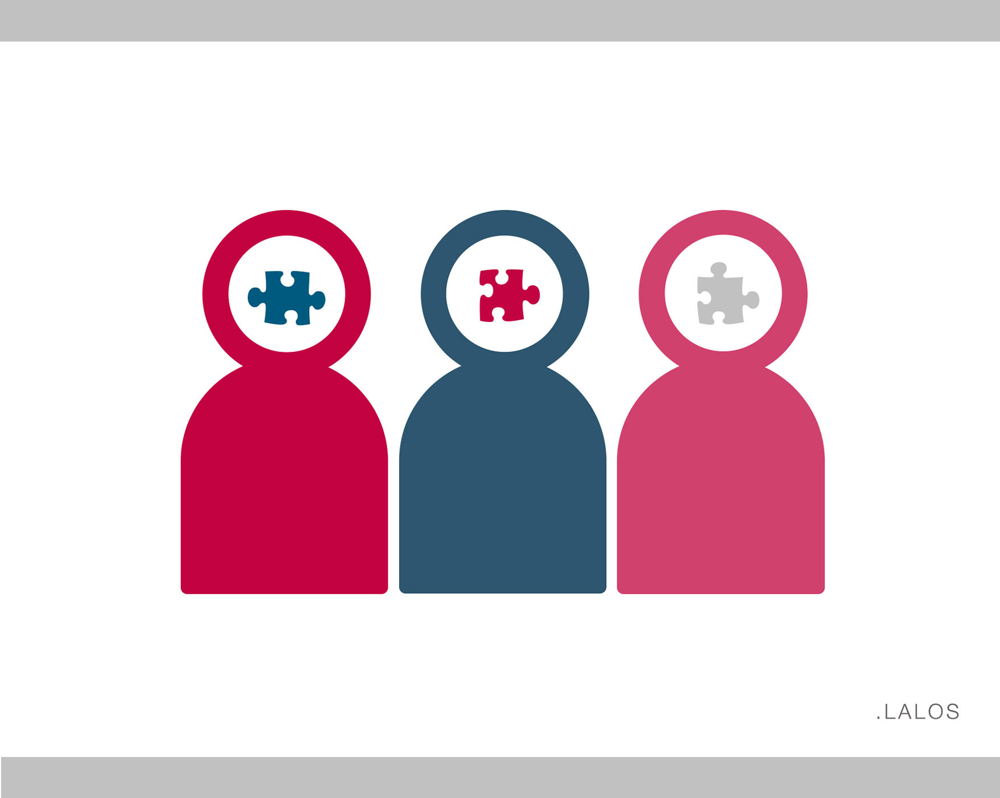

First let’s look at the common, definition of democracy:
According to Collins(1), is a system of running organizations, businesses, and groups in which each member is entitled to vote and take part in decisions.
Well I don’t think that in this case it could work: I’m pretty sure that I a user can’t take part of the social media’s strategic decisions. In addition, Mark was pretty clear when he declared last week: “Democracy isn’t a focus group” (2)
Ok so what about these most common definitions(1) “majority rule », « the principle of equality of rights, opportunity, and treatment, or the practice of this principle”
“Majority rule”
It seems that on Facebook, the majory so us, the users, can make the sun shine or make in rain.
This is especially true regarding brands reputation. By expressing our opinions only, we can build the brand of the year or the brand of Shame in one day …! Did you remember of anti-Kik Kat (Nestlé‘s brand) activist campaign on Facebook (3) ? They were denounced by Greenpeace as using Indonesian palm oil and so having a “devasting impact on Rainforest, The Climate and Orang-utans.” Nestlé’s fans were quite angry as we can see below :
This was enough for the company to ensure changes in product fabrication such as eliminating the use of this oil.
Thus, have you realized how valuable is your opinion as Facebook user? Now it is even the basis of a new business.
Did you ever hear of social listening? According to Sproudsocial (4) , “is the process of tracking conversations around specific phrases, words or brands, and then leveraging them to discover opportunities or create content for those audiences.” On social media, that only means to understand how us, users, speak about a brand on the Net, what do we exactly think of this brand, how do we considerate it? Many agencies decided to develop business intelligence tools such as Digimind to track all this information or even to propose the service to companies in order they watch their e-reputation.
We can also express ourselves on any subject.
"the principle of equality of rights, opportunity, and treatment, or the practice of this principle”
You can give your opinion on an original recipe, on a social drama or even on public figures. The inauguration Day has never been as trolled as during Trump one on Facebook. They were tons of Boycott Facebook Pages. Moreover, the official inauguration invite received thousands of incendiary comments(5)

As every people voice counts, diversity is the king.
This is especially true regarding new talents. In fact, on Facebook, we have the liberty to say what we are, what we love and thus to bring some diversity in top mainstream artists. Today, there is a few artists who began sketches online and who gain so huge audiences and so influence that they can make their own dream come true. I think of Ahmed Sylla who began his sketches on Facebook: he then obtained its own one-man show, a role in a TV serie and now he has his own top of the bill! I also think of Sanaa K who is an influencer as illustrator thanks to Facebook! We used to know illustrators who were influencers as artists coming from an elitist world and whose art could be appreciated in economic newspapers such as le Monde or in academic reviews. This is no longer the case. Thanks Facebook ‘audience, you can be illustrator, young, speaking about everyday life, women’ whims, richness of diversity and get + 44k followers!
Nevertheless on Facebook and social media in overall, as unique user, we are not really looking for diversity of opinions.
That is what Sandy Pentland, Director of MIT IDE leader explains through his research(6). He realized that when we navigate on social media or we look for interactions, we “self-identify and seek out like opinions”. If I think about it now, this is quite true: did you never realized when you are on Facebook, you seem happier, more likely to laugh or to be affected than when you are outside? As you are always selecting what you like, what subject are more likely to interest you, you’ve unconsciously or not, making a filter on the information the platform will show you. The platform “deep-learns” what you’re interested in. Outside, you don’t have this possibility to select the information you receive: you still must deal with opposite thoughts or opinions. Thus, Sandy Pentland explains physical interactions remain crucial to reach consensus, to preserve debates and so to preserve democracy ie here, diversity of opinions.
So Facebook, anew model of democracy? Regarding the possibilities offered to the users, no matter his social or economic background, yes, it is. Nevertheless, users still don’t have the possibility to be part of the strategic board and it doesn’t seem to be in Marc’s agenda.
Facebook is also a business, a data business which often raise privacy issue. Can this be compatible with a democracy model?
Sources:
(1) « Democracy definition and meaning Collins English Dictionary ».
(2) « Dear Mark Zuckerberg: Democracy is not a Facebook focus group. » America Magazine, 21 février 2017.
(3) « Activists Use Facebook To Help Pressure Nestlé On Deforestation Issue ».
(4) « What Is Social Listening & Why Is It Important? » Sprout Social, 18 novembre 2015.
(5) « Trump and Pence posted an inauguration invite on Facebook. They really should have disabled comments. "
(6) « To Rescue Democracy, Go Outside | MIT Initiative on the Digital Economy ».